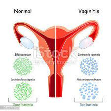

Sintomas
Os sintomas da vaginite variam conforme a causa, mas geralmente incluem coceira, ardor e dor na região vaginal. A secreção vaginal pode mudar, apresentando coloração, odor ou consistência alterados — como secreção espessa e branca na candidíase ou amarela e espumosa na tricomoníase. Também é comum a dor durante a relação sexual e sensação de desconforto ao urinar. Em alguns casos, pode haver inchaço ou vermelhidão nos lábios vaginais. Além disso, o quadro pode ser acompanhado por sensibilidade aumentada na área genital. Esses sintomas podem indicar infecções bacterianas, fúngicas, virais ou irritações, por isso é essencial procurar um ginecologista para diagnóstico e tratamento adequados.
